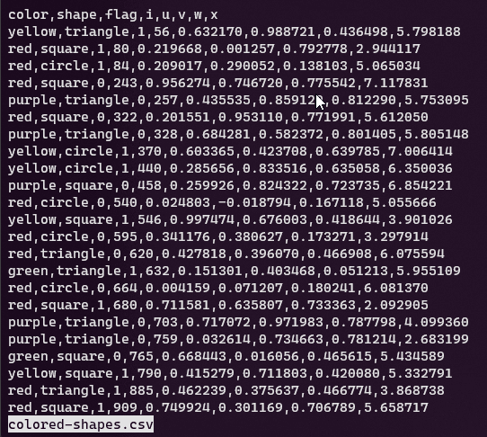

Esplora¶
In questo spazio facciamo riferimento a dati che sono archiviati come testo, una modalità molto diffusa (si pensi ai formati JSON, XML, CSV, TTL, YAML, ecc.) e per la quale gli strumenti a riga di comando hanno supporto nativo: si aspettano stringhe di testo come input.
Tanti strumenti di base e nativi sono impareggiabili nell'esplorare file di testo, in termini di rapidità, opzioni e modalità per farlo.
Sono spesso (in modo evidente) più comodi della gran parte di quelli con interfaccia grafica.
Visualizzare¶
Uno dei modi per conoscere un file è quello di visualizzarne i contenuti. Queste sono alcune delle utility classiche per farlo nel terminale.
cat¶
L'utility tipica è cat che "stampa" a schermo uno o più file (in questo caso concatena e stampa).
Se si vuole visualizzare il file colored-shapes.csv, il comando è semplicemente:
cat colored-shapes.csv
Vengono però stampate a schermo tutte le righe, e con file molto grandi può essere un po' lento e sopratutto poco informativo, perché non si leggerà l'intestazione che in alcuni formati (come i CSV) è un elemento di esplorazione dei dati prezioso.
Tip
Esiste anche la versione di cat, che consente di leggere anche file di testo compressi: zcat.
head¶
Per visualizzare soltanto le prime righe c'è l'utility head, che in maniere predefinita stampa le prime 10 righe:
head colored-shapes.csv
color,shape,flag,i,u,v,w,x
yellow,triangle,1,56,0.632170,0.988721,0.436498,5.798188
red,square,1,80,0.219668,0.001257,0.792778,2.944117
red,circle,1,84,0.209017,0.290052,0.138103,5.065034
red,square,0,243,0.956274,0.746720,0.775542,7.117831
purple,triangle,0,257,0.435535,0.859129,0.812290,5.753095
red,square,0,322,0.201551,0.953110,0.771991,5.612050
purple,triangle,0,328,0.684281,0.582372,0.801405,5.805148
yellow,circle,1,370,0.603365,0.423708,0.639785,7.006414
yellow,circle,1,440,0.285656,0.833516,0.635058,6.350036
Con l'opzione -n numeroDiRighe è possibile scegliere il numero di righe da visualizzare:
head -n 3 colored-shapes.csv
color,shape,flag,i,u,v,w,x
yellow,triangle,1,56,0.632170,0.988721,0.436498,5.798188
red,square,1,80,0.219668,0.001257,0.792778,2.944117
Per un formato come il CSV il comando head è prezioso, perché nella gran parte dei casi restituisce una buona visione del file: qual è il separatore dei campi, quali sono i campi, qual è il separatore dei decimali (se presenti), se ci sono caratteri speciali (come le "), ecc..
tail¶
Ma è bene poter vedere anche le ultime righe, per valutare se la struttura è identica a quella di intestazione e se ci sono "strani" contenuti (alle volte purtroppo ci sono note di testo, campi calcolati).
Il comando è tail:
tail colored-shapes.csv
Di default, le ultime 10 righe; si può definire quante se ne desiderano sempre con l'opzione -n numeroDiRighe.
less¶
Un altro strumento consigliato (ce sono tanti altri), per visualizzare ed esplorare il contenuto di un file di testo è less, che consente di sfogliare il contenuto schermata dopo schermata, man mano che lo schermo viene riempito:
less colored-shapes.csv
Alcune informazioni di base su less
- con l'o"pzione
-Ssi disabilita il world wrap - con Space si scorrono le schermate (vedi immagine sotto);
- con / si attiva la ricerca di una stringa;
- con n il risultato successivo della ricerca;
- con N il risultato successivo della ricerca;
- con G si va alla fine del file;
- con g si va all'inizio;
- con Q si esce da
less.

Tip
In questo modo - con head, tail e less - è possibile esplorare anche file di testo di grandi dimensioni.
Le utility di questa sezione però fanno soltanto visualizzare contenuti, non estraggono informazioni (numero di righe, colonne, encoding, dimensioni, ecc..).
Informazioni sui file¶
file¶
L'utility di base, preinstallata in tutti i sistemi Linux è file, che è utile per avere informazioni sul tipo di file.
file base_category.csv
base_category.csv: CSV text
Con l'opzione -i si ottengono informazioni sull'encoding.
file -i encoding_iso-8859-1.csv
encoding_iso-8859-1.csv: application/csv; charset=iso-8859-1
Conoscere l'encoding di un file di testo strutturato, da usare per fare analisi e trasformazione di dati è un elemento essenziale, perché se "mappato" scorrettamente porta a una lettura errata dei contenuti del file.
stat¶
stat fornisce moltissime informazioni sui file, come le dimensioni, i permessi, la data di modifica, ecc.:
stat encoding_iso-8859-1.csv
File: encoding_iso-8859-1.csv
Size: 33 Blocks: 0 IO Block: 512 regular file
Device: 2dh/45d Inode: 266275327968286903 Links: 1
Access: (0644/-rw-r--r--) Uid: ( 1000/userName) Gid: ( 1000/userName)
Access: 2022-02-19 09:17:54.648775600 +0100
Modify: 2022-02-19 09:17:54.637142300 +0100
Change: 2022-02-19 12:44:32.134296200 +0100
Birth: -
Encoding¶
Conoscere la codifica dei caratteri è un elemento chiave per la loro lettura. Specie con formati di testo come il CSV, in cui le informazioni sull'encoding non sono scritte all'interno del file (se va bene sono riportate in un testo che descrive il file).
Si può provare - come visto sopra - a estrapolare con file (o con chardet).
Un'esperienza comune di barriera all'uso di un file di testo, di cui non si conosce l'encoding, è quella ad esempio della errata lettura dei caratteri accentati, in cui un file come questo, viene letto male (Cefal�, sarebbe Cefalù):
id,nomeComune
1,Cefal�
2,Milano
3,Orr�
Tip
Spesso le utility hanno impostato come encoding standard di lettura l'UTF-8. Per leggere correttamente il file di sopra se ne può provare a estrapolare la codifica corretta con file (o con chardet) e poi se serve trasformarla in quella di output desiderata.
Le "misure"¶
A un file testuale di dati è importante "prendere le misure", come il numero di righe, il numero di caratteri, numero di colonne (se è un file a griglia tabellare), ecc..
wc¶
wc è una delle utility più importanti per "esplorare" file di testo.
Questo il file di input di esempio:
id,titolo
1,La spada nella roccia
2,Il mago di oz
| comando | output | descrizione |
|---|---|---|
wc wc-01.csv |
3 9 50 wc-01.csv |
numero di righe, parole e byte |
wc -l wc-01.csv |
3 wc-01.csv |
numero di righe |
wc -w wc-01.csv |
9 wc-01.csv |
numero di parole (separate da spazio) |
wc -c wc-01.csv |
50 wc-01.csv |
numero di byte |
wc --max-line-length wc-01.csv |
23 wc-01.csv |
il numero di caratteri della riga più lunga |
Tip
Se si vuole soltanto il numero di righe, senza il nome del file, il comando è <wc-01.csv wc -l
wc non è però un comando che interpreta il tipo di formato, e quindi in presenza di un file di input come questo sottostante - un CSV di due record (più intestazione) e due colonne - il conteggio delle righe sarà pari a 8.
1 2 3 4 5 6 7 8 | |
Questo file - vedi anteprima sottostante - contiene dei ritorni a capo nelle celle, e per ognuno viene conteggiata una riga.
| FieldA | FieldB |
|---|---|
| Come Quando Fuori Piove |
Ciao |
| Miao | Uno Due Tre |
Attenzione
Per poter conteggiare il numero di record di un CSV come questo, è necessario usare una utility che tenga conto delle caratteristiche del formato (CSV aware), come ad esempio il fatto che in una cella ci possono essere più righe.
Miller¶
Miller è una straordinaria utility per leggere, analizzare e trasformare file di testo strutturati.
È capace di interpretare le caratteristiche dei formati che supporta (CSV, TSV, JSON, ecc.) e quindi ad esempio contare correttamente il numero di record di un file CSV, anche in presenza di celle con ritorni a capo (vedi esempio soprastante).
mlr --csv tail -n 1 then put '$righe=NR' then cut -f righe wc-02.csv
righe
2
Alcune note:
--csvper impostare formato di input e output;tail -n 1per estrarre l'ultima riga;put '$righe=NR'per creare il camporighee valorizzarlo con il numero di riga della riga corrente -NR- che qui è l'ultima;cut -f righe, per avere in output soltanto il campo precedentemente creato.
Se si vuole in output anche il numero di colonne, il comando si può modificare in questo modo:
mlr --csv tail -n 1 then put '$righe=NR;$colonne=NF-1' then cut -f righe,colonne wc-02.csv
Con $colonne=NF-1 è stato aggiunto un campo che conta il numero di campi - NF - presenti nella riga corrente, a cui è stato sottratto 1, perché è stata aggiunta la colonna che dà conto del numero di righe, che non fa parte delle colonne pre esistenti nel file di input.
In output:
righe,colonne
2,2
Un esempio più eclatante è quando il file di input è un JSON come quello sottostante, composto da 2 "record" (qui è improprio come termine, ma per dare l'idea), ognuno con due campi.
1 2 3 4 5 6 7 8 9 10 | |
Il comando
mlr --j2c tail -n 1 then put '$righe=NR;$colonne=NF-1' then cut -f righe,colonne input.json
restituirà sempre (--j2c è per trasformare l'input in JSON in CSV)
righe,colonne
2,2
Info
A Miller è dedicata una monografia di questo sito.